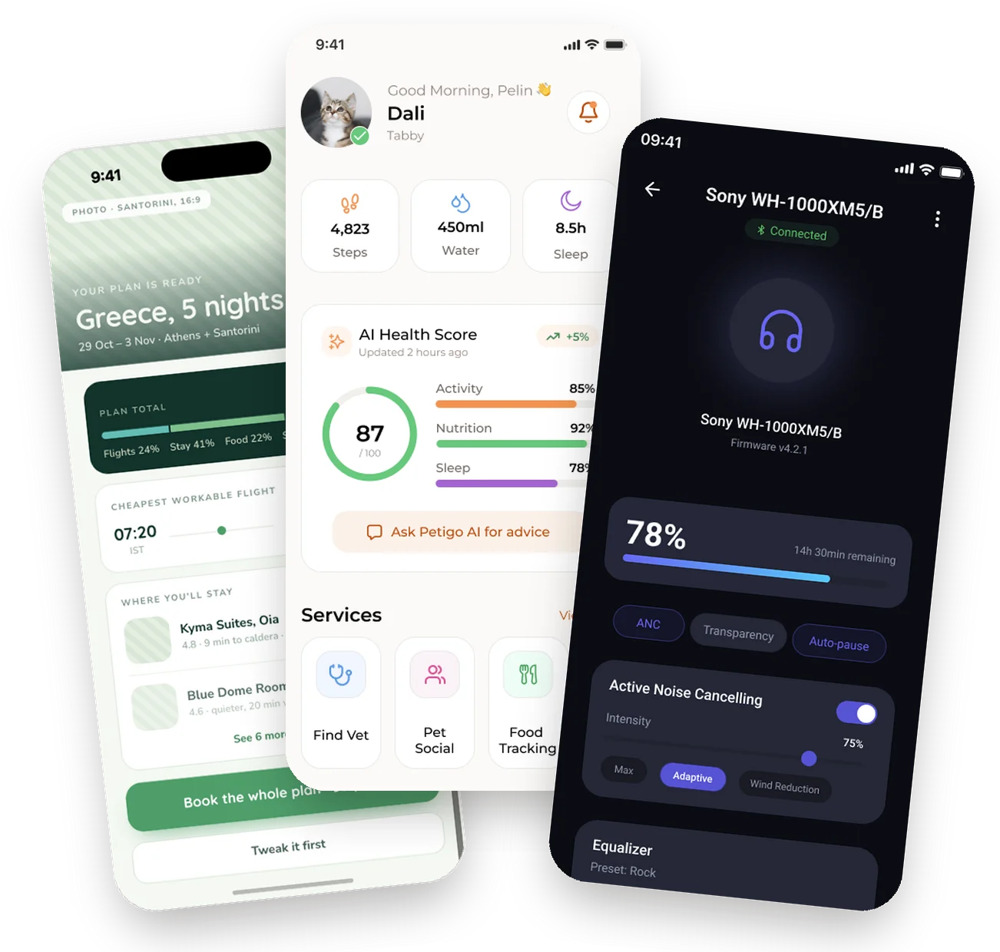
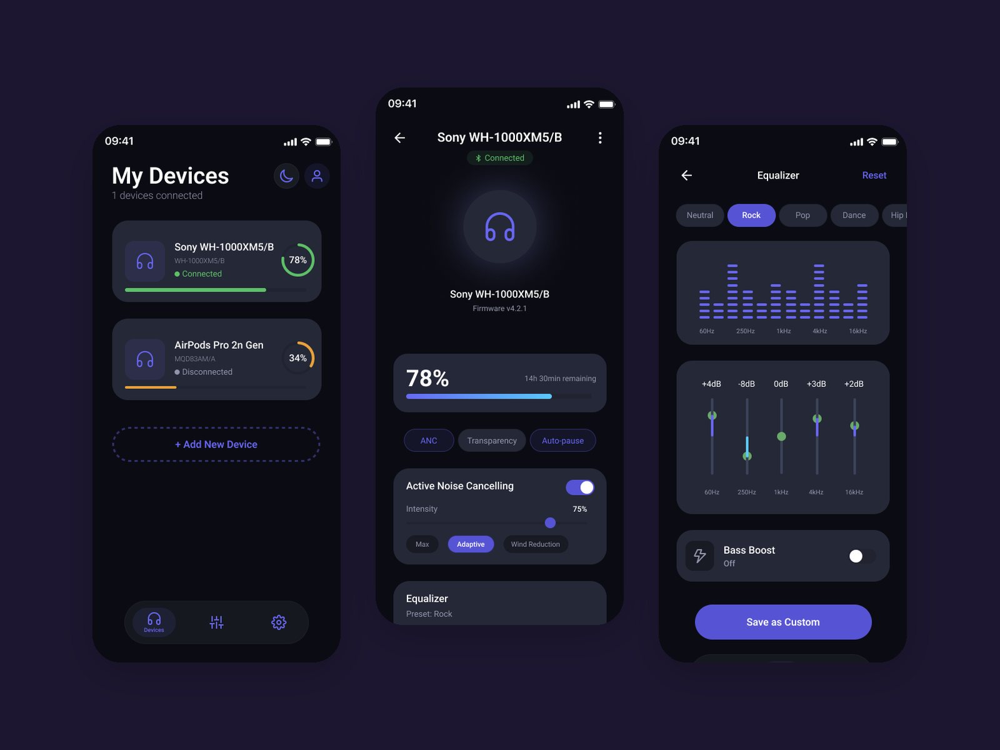

Jr. UI/UX Designer · Istanbul
Serra Marangoz designs calm, research-led interfaces.
I work across the full process, from problem framing and user research to prototyping and UI. Every case here starts with real users and ends with screens you can click through.

Selected work
Research-led case studies. Open one to read the story and try the prototype.

Petigo
AI pet-care assistant. 8 interviews led to a health record, an AI assistant and smart reminders.

AudioFlow
Earbud companion app. One hub for battery, noise control and EQ.

Moovit
Transit-app research. 37 reviews and 5 interviews led to 3 recommendations.

Travel Mates
Social trip planner. Design thinking from interviews to 12 hi-fi screens.
Daily UI
Seven challenges, seven made-up brands, each designed for phone, tablet and desktop.


About me
Welcome to my portfolio.
I’m a UI/UX designer. My projects come out of an intensive, practice-oriented UX training, where I focused on applying user-centred research and design methods as rigorously as possible. That is the lens all of my case studies are built through.
I’m increasingly bringing AI tools into research synthesis and workflow automation, and I’m looking to grow with a team where design decisions are tied directly to business outcomes.
Before design, I studied philosophy and ran my own felt-craft brand for three years, so I’m used to asking why, and to shipping.
Experience
- Teaching Assistant Trainee
- Brick Institute Jul 2025 – now
- UX/UI Designer (Intern)
- Userspots Aug – Dec 2025
- Founder & Maker
- Moiu Felt, self-owned brand 2021 – 2024
Education
- UX School Bootcamp
- Brick Institute 2024 – 2025
- BA in Philosophy
- Bursa Uludağ University 2015 – 2019